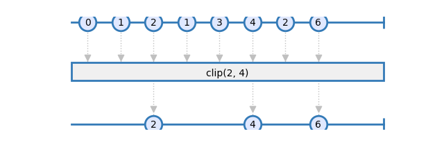
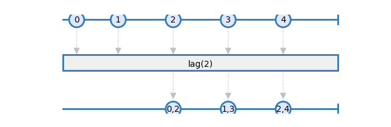
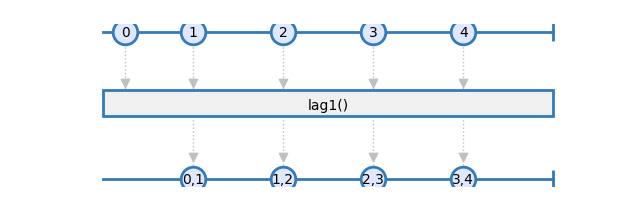
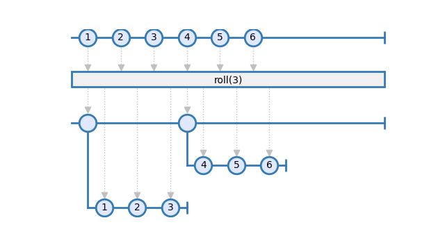

Data¶
-
rxsci.data.clip(lower_bound=None, higher_bound=None)¶ clip values between lower_bound (included) and higher_bound (included)

- Raises
ValueError if no bound is provided or lower_bound is bigger than – higher_bound
-
rxsci.data.fill_none(value)¶ Replaces None values with value
-
rxsci.data.lag(size=1)¶ Buffers a lag of size on source items

- Parameters
size – [Optional] size of the lag.
- Returns
An observable where each item is a tuple of (lag, current) items. On the first iterations, the item (first, current) is emitted.
-
rxsci.data.lag1()¶ Buffers a lag of 1 on source items

- Returns
An observable where each item is a tuple of (lag, current) items. On the first iteration, the item (current, current) is emitted.
-
rxsci.data.roll(window, stride, pipeline)¶ Projects each element of an observable sequence into zero or more windows which are produced based on element window information.

Examples
>>> rs.data.roll(3), >>> rs.data.roll(window=3, step=2),
- Parameters
window – Length of each window.
stride – Number of elements to step between creation of consecutive windows.
- Returns
An observable sequence of windows.
- Raises
ValueError if window or step is negative –
-
rxsci.data.sort(key=<function <lambda>>)¶ sort items according to key
Items are sorted in ascending order.
Impementation note: This operator caches all the items of the source observable before sorting them. It can be used ONLY on BATCH source, and consumes a lot of memory.
- Parameters
key – [Optional] function used to extract the sorting key on each item.
- Returns
An observable emitting the sorted items of the source observable.
-
rxsci.data.split(predicate, pipeline)¶ Split an observable based on a predicate criteria.
- Parameters
predicate – A function called for each item, that returns the split criteria.
- Returns
A higher order observable returning on observable for each split criteria.
-
rxsci.data.to_deque(extend=False)¶ flattens list items to a deque fifo and publish them when the source observable completes.
This buffers and emits the items of the source observable as is. Items on the deque are pop as they are emitted. This is useful when working on batch data since it allows to dereference items as they are processed.
- Parameters
extend – [Optional] When set to true, the deque is extended for each item received. The default behavior is to append items to the deque.